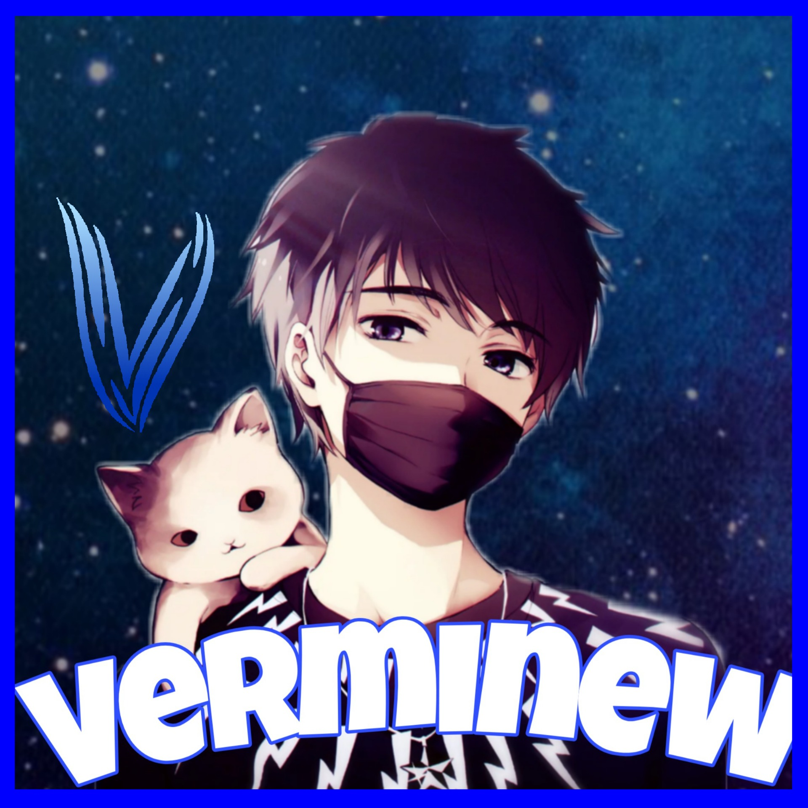

Programistyka i retro muzyka są moją pasją.
Cześć, tu Vermi! - młody programista z pasją i chęcią rozwoju w zakresie developmentu.
Mam 17 [2023] lat. Moja ksywka jest połączeniem dwóch części - "ver", które odnosi się do słowa "version" w języku angielskim, oraz "mi", które reprezentuje moje imię. Całkiem proste :3
Interesuję się szerokim spektrum języków programowania, w tym Python, C++, C#, Java, Android Studio, Web Development (HTML, CSS, SCSS, JavaScript, JQuery, TypeScript, frameworki: bootstrap), dodatkowo: Batch, Bash i Processing. Jednym z moich ulubionych projektów były sieci neuronowe, które pozwoliły mi na stworzenie gry NeuralSnake- klasyczny wszystkim znany komórkowy „wąż”, ale ze szczyptą chęci do uczenia się. W sumie to jesteśmy w tym aspekcie do siebie podobni :3
Ponadto stworzyłem już kilka prostych gier opartych na własnym autorskim silniku. Jedna z moich ulubionych jest „CubeDash”- gra, w której musisz unikać statkiem lecących w twoją stronę zabójczych sześcianów! Wiem brzmi groźnie! Jakby ktoś spojrzał z boku to jest to na prawdę prosta gra, ale cieszmy mnie to, że potrafiłem skonstruować ją od samego początku do końca własnoręcznie. Możliwość tworzenia czegoś swojego od zera daje mi zdecydowanie największą satysfakcję, bo wtedy czuję że nam pełną wolność twórczą.
Poza tym chcę nie tylko uczyć się nowych języków programowania, ale także rozwijać moje umiejętności tworzenia aplikacji desktopowych na Androida oraz iOS. Poza tym, jestem zajawiony tworzeniem muzyki 8-bitowej i 16-bitowej. Jest to moja ulubiona forma relaksu i spedzania wolnego czasu. Szczególnie lubię tworzyć coś swojego, a jak coveruje to zazwyczaj soundtracki z różnych gier. Jestem pełen energii i zaangażowania, aby rozwijać swoje umiejętności i dzielić się nimi z innymi.
To jest właśnie to, co czyni mnie takim, kim jestem - Vermim, programistą z pasją.


Co to jest?
W przypadku gry NeuralSnake z wykorzystaniem sieci
neuronowych, program jest w stanie uczyć się poprzez
powtarzanie i analizowanie swoich ruchów.
W każdej chwili gry, sieć otrzymuje informację o
położeniu punktu oraz każdej części węża na planszy, a
następnie w oparciu o te informacje podejmuje decyzję o
wykonanej akcji, która jest wykonywana 512 razy na sekundę.
Dzięki temu, sieć jest w stanie uczyć się od swoich błędów i
z czasem stawać się coraz lepsza w grze.
Jest to bardzo ciekawy projekt, ponieważ pozwala na
połączenie koncepcji gier z sztuczną inteligencją, głębokim
uczeniem i uczeniem maszynowym. Jest to także świetny sposób
na zrozumienie, jak sieci neuronowe działają i jak można je
wykorzystać w praktycznych aplikacjach.
Jako pasjonat tworzenia muzyki 8-bit lub 16-bitowej.
Muzyka ta jest rodzajem elektronicznej muzyki, która powstała w
czasach komputerów osobistych i jest inspirowana muzyką z gier
komputerowych.
W moim wykonaniu, staram się uzyskać autentyczne
brzmienie, korzystając z syntezatorów dźwięku i specjalnych narzędzi,
takich jak trackery, aby stworzyć kompozycje, które są pełne
melodyjnych linii i chwytliwych rytmów.
Moja muzyka jest często
inspirowana klasycznymi grami i ich motywami muzycznymi, a także
współczesnymi gatunkami, takimi jak vaporwave i synthwave.
Tworzenie
muzyki 8-bit lub 16-bitowej jest dla mnie formą ucieczki i sposobem na
wyrażenie moich emocji i pomysłów.
To również pozwala mi
poćwiczyć moje umiejętności w programowaniu i produkcji dźwięku, co
jest dla mnie niezwykle ekscytujące.
Jestem dumny z moich projektów i mam nadzieję, że będzie on
inspiracją dla innych, którzy również chcą tworzyć muzykę 8-bit lub
16-bitową.
Dziękuję serdecznie platformie Github za hostowanie mojej strony. Jestem wdzięczny za ich stabilną i niezawodną platformę, która pozwala mi dzielić się moimi projektami z całym światem. Jestem podekscytowany tym, co jeszcze będę mieć okazję zrobić z wykorzystaniem tej platformy.
Przejdź do github